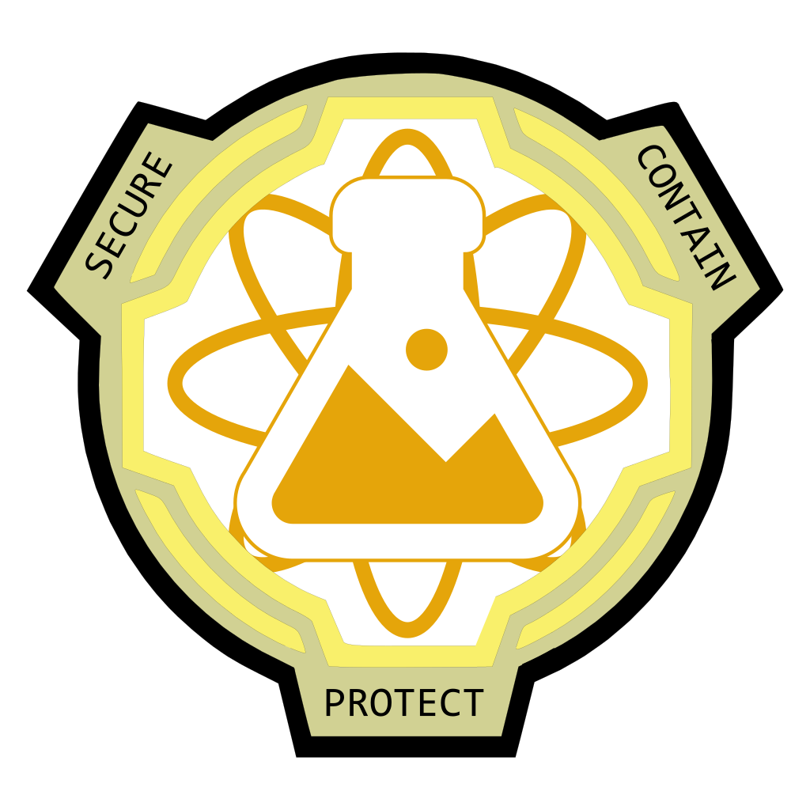

RESEARCH SOP
Hello and Welcome to the Official Research SOP, here you will learn how research operates and what your tasks will be.
RULES
- Stay professional when on duty.
When you are on duty we expect you to stay professional with your fellow foundation members, when on break you are expected to keep at least some level of professionalism.
- Have appropriate security.
When running tests make sure you have the appropriate level of security, all tests will be denied and researchers will be reprimanded for not having appropriate security.
- Refer to SCPs as their number.
Please refer to all anomalies as their assigned number, this is most important in official documents, any documents that refer to an anomaly as anything other than the assigned number will be denied and required to be rewritten.
- Always get approval.
When looking to do a test make sure to get permission from the correct rank. Any test done without approval will result in a punishment.
Department Ranks and Power Structure
[Department Leadership]
Director of Research
Deputy Director of Research
Chief Research Officer
[Officers]
Research Liaison
Research Manager
[NCOs]
Research Supervisor
Senior Researcher
Researcher
[Enlisted]
Junior Researcher
Apprentice Researcher
Research Intern
Testing Permissions
Below is a link to the Testing Permissions Spread Sheet. Please make sure to check this before submitting a test application, supervising a test, or approving a test to make sure you are allowed to.